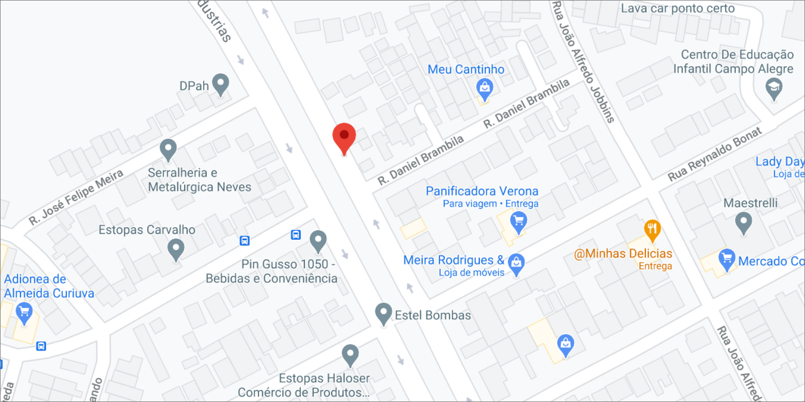

ENCONTRAMOS O MATCH PERFEITO PRA TATTOO QUE VOCÊ QUER FAZER
Nós não apenas conectamos pessoas. Nós repensamos e personalizamos todo o processo de fazer uma tatuagem.
ENCONTRAMOS O MATCH PERFEITO PRA TATTOO QUE VOCÊ QUER FAZER
Fundada por quatro entusiastas da arte, da comunicação e da tecnologia, a Inker Tattoo é o empurrãozinho que você precisava. A empresa surgiu da certeza de que a única forma sustentável de fazer negócios é criar relacionamentos saudáveis entre as pessoas. Mais que isso, surgiu da certeza de que existem afinidades comerciais e sociais inexploradas entre os tatuadores e as pessoas que querem se tatuar.
onde estamos localizado
Av. das Industrias, 1632 - Cidade Industrial De Curitiba